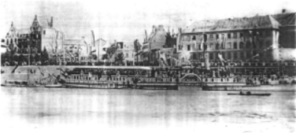

Eine handvoll beherzter Männer hob den
Verein vor 110 Jahren als reine Rudergesellschaft aus der Taufe. Das erste Bootshaus war
ein alter Werkschuppen am Oberkassler Ufer. Wenn drüben ein Ruderer oder ein Steuermann
für eine Mannschaft gesucht wurde oder wenn, was noch wichtiger war, eine Bowle bereit
stand, flatterte am Vereinsmast das "Suffläppke", ein Brauch, der leider aus
der Mode gekommen ist.
Die erste Herberge musste der 1898 eingeweihten Rheinbrücke weichen. Danach wurden zwei
Salondampfer, zunächst die "Friede" und danach die "Wilhelm" auf der
rechten Rheinseite, unweit von Lambertus, das viel bestaunte Obdach des WSVD. Das
Vereinsleben begann zu florieren. Zum fleißig betriebenen Wanderrudern in entfernte
Gebiete kam immer häufiger die Teilnahme an rennruderischen Wettbewerben. Diese sahen den
Verein zunehmend auf dem Siegertreppchen. Es wurde eine Schülerabteilung und später eine
Damenriege gegründet.

1923 konnte an der Rotterdamer Straße der "tollkühne Plan" verwirklicht
werden, ein feines Obdach, das "Haus am Rhein", zu errichten. Geräumige
Bootshallen und ein Ruderbecken erlebten ihre sportliche Nutzung, gastronomische Räume
die Gestaltung von rauschenden Festen, die in der Stadt beispielhaft waren. Der WSVD
ereichte damals wenigstens für ein Jahrzehnt mit seinem nicht wieder erreichten
Mitgliederstand seine Blütezeit.
Nach dem 2. Weltkrieg war zunächst jeder Sportlichkeit ein Ende gesetzt, da die Briten
das Bootshaus als Clubhaus vereinnahmten und auf dem Bootsplatz einen Swimmingpool
aushoben. Nach vielerlei Hilfeersuchen, selbst beim britischen Prinzgemahl, konnte das
Clubhaus schließlich zurückgewonnen werden und der Verein sah wieder bessere Zeiten.
1962 wurde eine Yachtabteilung gegründet, die heute zum festen Bestandteil des WSVD
gehört. Die Beschädigungen am Haus in der Kriegs- und Nachkriegszeit machten 1987 einen
Neubau notwendig. Die Kosten konnten nur mit Hilfe eines Investors getragen werden. Der
WSVD konnte allerdings das Eigentum an den von ihm genutzten Räumlichkeiten erhalten.

Heute verfügt der Verein über gastronomische Räumlichkeiten mit großer Terrasse, eine
große Bootshalle, eine Werkstatt, ein Ruderbecken, einen Fitnessraum mit modernen
Geräten und eine neue, hochwassersichere Steganlage für Segelboote und Motoryachten. Der
Bootsbestand der Ruderabteilung bietet vom Einer bis zum fußgesteuerten Fünfer alle
Bootstypen, die für das Rudern auf dem Rhein geeignet sind. Die schlanken Rennboote,
darunter ein Achter, haben Unterkunft im Industriehafen, wo die Vereinsjugend wieder
erfolgreich trainiert. |